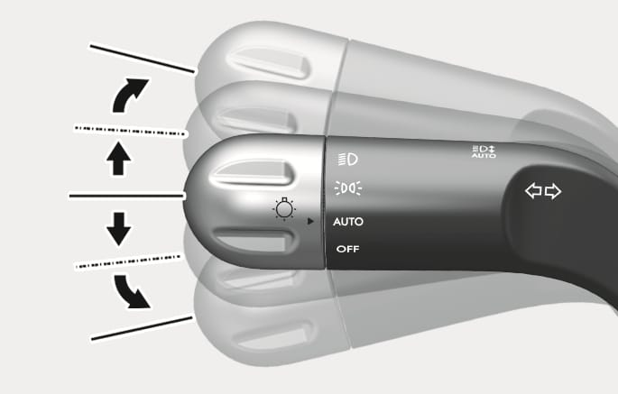
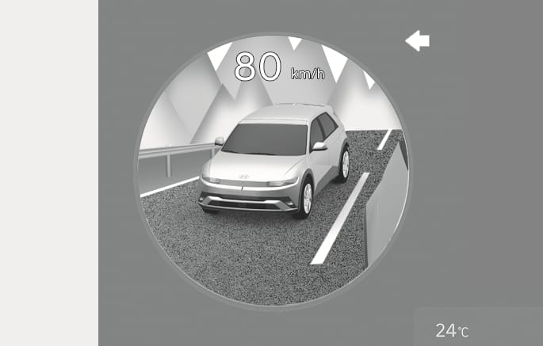

후측방 모니터 작동
방향지시등 스위치

2C_BVMTurnSignal

2C_BVMLeftSideInfo
후측방 모니터는 좌측 또는 우측 방향지시등이 켜지면 해당 방향의 후측방 영상을 클러스터에 표시합니다.
후측방 모니터는 다음의 조건 중 하나가 해당되면 해제됩니다.
-
작동 중인 방향지시등이 꺼짐
-
비상 경고등이 켜짐
-
클러스터에 다른 주요 정보가 표시